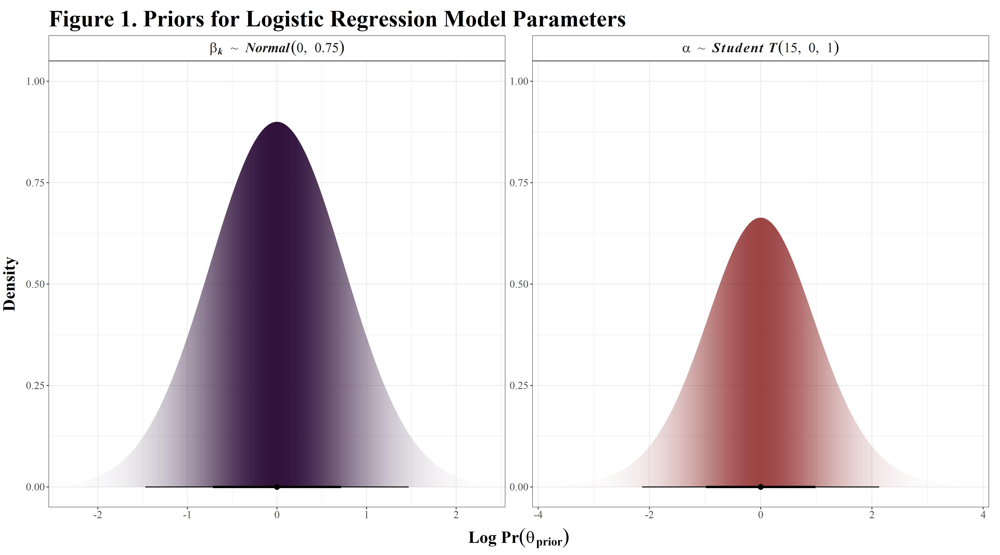
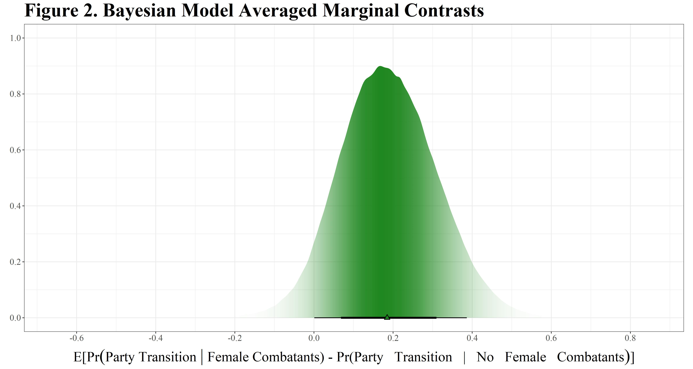

As George E. P. Box famously posed the problem, “all models are wrong, but some models are useful” and thus the fundamental question practitioners of applied statistics are faced with is how wrong can we be less wrong? This question tends to be a recurring theme of my own dissertation research, which makes extensive use of various approaches to Bayesian Model Averaging (BMA) in pursuit of this end one of which is Bayesian Model Averaged Marginal Effects (BMAMEs). Thanks to Vincent Arel-Bundock’s help the {marginaleffects} R package now has an implementation for estimating BMAMEs that works with any model fit with {brms} (Arel-Bundock 2022; Bürkner 2017, 2018). This blog post is designed to serve as a general demonstration of how to propagate uncertainty in the process of model selection forward when estimating average marginal effects for Bayesian regression models.
The first section provides a brief overview of BMA in the context of political science, its advantages and shortcomings, and recently proposed alternative approaches that may help overcome some of the issues with traditional BMA (e.g., Yao et al. 2018). In the second half of the post, I turn to a demonstration and comparison of each of the approaches to BMAMEs supported by {marginaleffects} based on an applied example from the second chapter of my dissertation which examines how the participation of women in combat during civil wars shapes the transition of former rebel groups to political parties at wars end (Nafa and Roark 2022). While no approach to estimation is perfect, BMA and its variants provide a principled, relatively robust way to propagate uncertainty in quantities typically of interest to researchers in the social sciences and are capable of helping us avoid unnecessary dichotomies that are, in most cases, false.
Despite it’s introduction to the discipline more than two decades ago by Bartels (1997), applications of BMA in political science remain rare and are largely confined to the topic of political methodology (Cranmer, Rice, and Siverson 2015; Juhl 2019; Montgomery and Nyhan 2010). This presents something of a problem given the numerous studies demonstrating the dangers of tossing a large number of likely correlated predictors into a regression model (Achen 2005; Clarke 2005, 2009; Montgomery, Nyhan, and Torres 2018); the reality that if we wish to adjudicate between two or more competing theories comparing coefficients in a single model is generally insufficient to accomplish such a task (Clarke 2007; Hollenbach and Montgomery 2020; Imai and Tingley 2011); and the difficulty of assessing what we truly known about political phenomenon that results from an obsession with statistical significance rather than predictive validity (Cranmer and Desmarais 2017; Schrodt 2014; Ward, Greenhill, and Bakke 2010). Model averaging provides a natural and intuitive way of resolving many of these issues and tends to have a substantially lower false positive rate than alternative approaches (Plümper and Traunmüller 2018).
In contrast to Montgomery and Nyhan’s (2010) suggestion that “BMA is best used as a subsequent robustness check to show that our inferences are not overly sensitive to plausible variations in model specification” (266), model averaging can and should be used as far more than a robustness check. Consider a case in which we have a set of \(\mathcal{M}\) possible models, each of which characterizes a given theoretical hypothesis about the process that generated the observed data \(y\). In the case of only two models competing models, the posterior odds of a given model \(i\) relative to an alternative \(k\) is
\[ \underbrace{\frac{p(\mathcal{M}_{i} \, | \, y)}{p(\mathcal{M}_{k} \, | \, y)}}_{\text{Posterior Odds}} = \underbrace{\frac{p(y \, | \, \mathcal{M}_{i})}{p(y \, | \, \mathcal{M}_{k})}}_{\text{Bayes Factor}} \times \underbrace{\frac{\pi(\mathcal{M}_{i})}{\pi(\mathcal{M}_{k})}}_{\text{Model Prior}} \] where \(p(y \,|\, \mathcal{M})\) is the marginal likelihood of the observed data under each of the candidate models and may be expressed as
\[ \underbrace{p(y \,|\, \mathcal{M})}_{\text{Marginal Likelihood}} = \int\underbrace{p(y \,|\, \theta,\, \mathcal{M})}_{\text{Likelihood}} \, \underbrace{\pi(\theta \,|\, \mathcal{M})}_{\text{Prior}}d\theta \]
In practice, for all but the simplest models deriving this integral analytically is computationally intractable and it is necessary to rely on algorithmic approximations such as bridge sampling (Gelman and Meng 1998; Gronau et al. 2017; Wang, Jones, and Meng 2020), some of the limits of which I discuss in further detail below. Extending this to the setting in which \(\mathcal{M_{k}}\) is a set of plausible competing models of size \(k > 1\), the posterior model probability of the \(i^{th}\) model relative to the set of alternatives \(\mathcal{M_{k}}\) is
\[ \Pr(\mathcal{M}_{i} \,|\, y) = \frac{p(y \, | \, \mathcal{M}_{i}) \, \cdot \, \pi(\mathcal{M}_{i})}{\displaystyle\sum^{\mathcal{m}}_{k=1} p(y \, | \, \mathcal{M}_{k}) \, \cdot \, \pi(\mathcal{M}_{k})} \]
By repeating this calculation for each model \(i \in \{1,2,\dots,\mathcal{M}\}\), we obtain a vector of weights of length \(\mathcal{M}\). We can then take \(n\) random draws from the posterior predictive distribution of each model where \(n\) is proportional to its respective posterior model probability weight, resulting in a weighted average of the posterior distributions that accounts for uncertainty in the model selection process.
The traditional approach to BMA is not without problems, at least three of which are notable and warrant some discussion. First, traditional BMA rests upon a closed-\(\mathcal{M}\) assumption–that is, the “true” model is among those under consideration in the set of candidate models \(\mathcal{M}\). In the open-\(\mathcal{M}\) setting which arises when the “true” model is not among those under consideration, as will generally be the case in any social science application, the traditional approach to BMA is flawed and estimated effects based on posterior probability weights are likely to be biased (Hollenbach and Montgomery 2020; Yao et al. 2018). The extent to which this presents a problem depends on the nature of the research question and the inferential goals of the researcher, but it is generally advisable to undertake some form of sensitivity analysis to ensure the analyst’s substantive conclusions are not sensitive to violations of the closed-\(\mathcal{M}\) assumption.
The second area of concern stems from the fact that posterior model probability weights may be highly sensitive to priors on parameters, model priors, or both. It is by this point common knowledge that specifying flat priors on the parameters of a model will tend to bias Bayes Factors, and by extension values that depend on them, violently in favor of the null model–that is “flat” priors, which to begin with are not a mathematically defined concept, can end up being extremely informative in all the wrong ways. My perhaps controversial take on this issue is that this is a feature of applied Bayesian inference rather than a bug–if you make stupid assumptions, you will end up with stupid results. The solution to this problem is to think carefully about what the universe of possible effect sizes you might observe is, assign reasonable priors that constrain the parameter space, and verify that the results are robust to alternative distributional assumptions.
The final concern relates to the possibility that the bridge sampling approximation used to derive the marginal likelihood may not be reliable. Schad et al. (2022) provide guidelines for robust inference and sensitivity analysis based on approximate Bayes Factors, though many of the issues they highlight stem from logical inconsistencies inherent in the framework of null hypothesis significance testing that employing Bayesian methods does not somehow magically fix (McShane et al. 2019). As stated above, it is generally advisable to specify reasonable priors and consider alternative prior distributions. In addition to these suggestions, it is also generally advisable to estimate a distribution of the approximate marginal likelihood by running the bridge sampling algorithm multiple times for each model to ensure stability of the estimates.
To address the flaws of traditional BMA, virtually all of which stem from it’s reliance on Bayes Factors (Hollenbach and Montgomery 2020), in the open-\(\mathcal{M}\) setting Yao et al. (2018) propose several alternative approaches to weighting posterior predictive distributions that do not rely on posterior model probabilities and thus avoid invoking the closed-\(\mathcal{M}\) assumption. Instead, these approaches rely on predictive weights based on some form of either exact or approximate cross validation and implemented in the loo package (Piironen and Vehtari 2016; Vehtari et al. 2020). Yao et al. (2018) and Hollenbach and Montgomery (2020) provide accessible overviews of these approaches and in the interest brevity I direct interested readers to consult those works for further details.
Since predictive-based approaches to estimating model weights do not rely upon the closed-\(\mathcal{M}\) assumption, they provide a way of either avoiding it altogether–whether this is the correct approach is fundamentally depends on the research question to be answered–or relaxing it as a robustness check on the posterior probability weights. Note that the core difference between each of these approaches to model averaging lies primarily in how the weights are estimated and the process of averaging across the posterior predictive distributions of each model by taking random draws from its posterior distribution proportional to its model weight is the same regardless of which approach is taken.
Once we’ve decided how to obtain the model weights, the {marginaleffects} package provides the necessary functionality to handle everything else for us thanks to the feature-rich support for various approaches to averaging across posterior distributions provided by {brms}’ pp_average function. To obtain the BMAME for a given parameter while accounting for the uncertainty in the model specifications, version 0.5.0 of {marginaleffects} allows users to specify the argument type = "average" passed to the main workhorse function for objects of class brmsfit and any additional arguments to be passed down to pp_average such as the type of weights to estimate, or alternatively a numeric vector of pre-estimated weights which is usually the more computationally efficient option and the approach I take in the applied example below.
To demonstrate this new functionality, I draw on an example loosely adapted from part of my dissertation research in which I examine how the active participation of women in rebel groups during wartime shapes the political calculus of former combatant groups at war’s end–in short, I expect rebel groups where women participated in combat roles during wartime are more likely to form political parties and participate in post-conflict elections. Note that this demonstration is not comprehensive and only illustrates one aspect of how BMAMEs might be applied in practice. However, as far as {marginaleffects} functionality is concerned, the general workflow is identical regardless.
The outcome, Rebel to Party Transition, is a dichotomous event that takes a value of one if a rebel group both forms a political party and participates in the country’s first post-conflict elections and zero otherwise.1 To identify instances where women participated in combat roles on the side of rebel groups during wartime, I construct a binary indicator based on the Women in Armed Rebellion Dataset (Wood and Thomas 2017). Finally, I also adjust for baseline characteristics including group ideology and goals (Braithwaite and Cunningham 2019), organizational capacity and governance structure (Albert 2022),2 and geography that may impact both whether women participate in combat on behalf of a given rebel group and whether that group transitions to a political party in the aftermath of conflict.
Relevant for the demonstration of BMA, is the fact that WARD provides two separate indicators for the presence of female combatants, one that includes cases in which women only participated in combat as suicide bombers and a second that excludes those cases. In terms of which of these is more appropriate for the analysis at hand, theory provides little guidance. Rather than simply running the analysis on both and reporting the set of results that is more favorable, BMA provides a way of combining what are effectively two slightly different measures of the same concept into a single model averaged estimate.
## Set Project Options----
options(
digits = 6, # Significant figures output
scipen = 999, # Disable scientific notation
repos = getOption("repos")["CRAN"],
mc.cores = 12L,
knitr.kable.NA = '',
future.globals.maxSize = 24000*1024^2
)
## Load the necessary libraries----
pacman::p_load(
"tidyverse",
"data.table",
"dtplyr",
"brms",
"kableExtra",
"furrr",
"modelsummary",
"marginaleffects",
"tidybayes",
"latex2exp",
"patchwork",
install = FALSE
)
## Load the Pre-Processed Data for the Main Analysis----
df <- read_rds("assets/Main_Project_Data.RDS")
### Model data with female combatants (including suicide bombers)----
model_df_a <- df %>%
transmute(
# Identifiers and outcome
across(c(row_id:no_election, rebel_gov_theta:rebel_gov_upper)),
# Center Predictors at their mean
across(
c(femrebels, ethnic_id, party_affil,
left_ideol:idependence, africa:post_coldwar),
~ ((as.integer(.x) - 1) - mean((as.integer(.x) - 1), na.rm = TRUE))
))
### Model data with female combatants (excluding suicide bombers)----
model_df_b <- df %>%
transmute(
# Identifiers and outcome
across(c(row_id:no_election, rebel_gov_theta:rebel_gov_upper)),
# Center Predictors at their mean
across(
c(femrebels_exs, ethnic_id, party_affil,
left_ideol:idependence, africa:post_coldwar),
~ ((as.integer(.x) - 1) - mean((as.integer(.x) - 1), na.rm = TRUE))
)) %>%
# Rename female rebels (excluding suicide bombers) to avoid later issues
rename(femrebels = femrebels_exs)For the purposes of this example, I estimate a series of Bayesian logistic regression models whose coefficients are assigned independent normal priors with mean 0 and standard deviation \(\frac{3}{4}\). In practical terms, these are weakly to moderately informative insofar as they are agnostic about the direction of the effect but concentrate 95% of the probability mass in the range of \(\pm 1.5\) on the logit scale. We’ll place a slightly wider prior from a T distribution on the overall intercept term \(\alpha\) and then, since this is all fairly abstract, we can visualize the prior distributions as shown below.
\[ \begin{aligned} y_{i} \sim& Bernoulli(\text{logit}^{-1}[\theta_{i}])\\ \theta_{i} &= \alpha + X_{n}\beta_{k}\\ \textit{with priors}\\ \alpha &\sim \textit{Student T}(15,\, 0,\, 1) \\ \beta_{1:k} &\sim \textit{Normal}(0, \, 0.75)\\ \end{aligned} \]
# Specify the priors using standard brms syntax
priors_df <- prior(normal(0, 0.75), class = "b") +
prior(student_t(15, 0, 1), class = "b", coef = "Intercept")
# Parse the brms priors object
priors_df <- parse_dist(priors_df)
### Set parameter names for the facets----
prior_labels <- as_labeller(
x = c(
"normal(0, 0.75)" = TeX(
r'($\beta_{k} \, \sim \, Normal(0,\, 0.75)$)',
output = "character",
bold = T,
italic = T
),
"student_t(15, 0, 1)" = TeX(
r'($\alpha\, \sim \, Student\, T(15,\, 0,\, 1)$)',
output = "character",
bold = T,
italic = T
)
),
default = label_parsed
)
## Plot the prior distributions
priors_plot_main %>%
# Initiate the ggplot object
ggplot() +
# Facet by the prior distributions
facet_wrap(vars(prior), scales = "free", labeller = prior_labels) +
# Add a half eye geom for the prior distributions
stat_dist_halfeye(
aes(dist = .dist, args = .args, fill = prior, slab_alpha = stat(pdf)),
fill_type = "segments",
show.legend = F
) +
# Flip the x and y axis
coord_flip() +
# Set the fill parameter for each group
scale_fill_viridis_d() +
# Custom plot theme settings
plot_theme(
plot.margin = margin(5, 5, 5, 5, "mm"),
strip_size = 18,
xaxis_size = 22,
yaxis_size = 22
) +
# Add labels to the plot
labs(
x = "Density",
title = "Figure 1. Priors for Logistic Regression Model Parameters",
y = latex2exp::TeX(r'(Log $\Pr(\theta_{prior})$)', bold = T)
)
The brms R package provides an easy to use R interface to Stan. Here we estimate each of the models sequentially by looping over the formulas and data sets. In this example, I run each model with six Markov chains in parallel for 8000 iterations per chain discarding the first 3,000 draws from each chain after the warm-up stage. This takes about 2.5 seconds to run per model and leaves 30,000 post-warmup samples for subsequent use. While this is well in excess of what is required for reliable estimation, the large number of post-warmup draws is needed to ensure stability of the bridge sampling approximation for the marginal likelihood in the next stage.
# Full model with female rebels variable
logit_full_femrebels <- bf(
elect_party ~ rebel_gov_theta + nationalist_ideol + left_ideol +
idependence + ethnic_id + party_affil + africa + post_coldwar +
femrebels,
center = FALSE
)
# Reduced model with female rebels variable
logit_minimal_femrebels <- bf(
elect_party ~ rebel_gov_theta + africa + femrebels,
center = FALSE
)
## Bayesian Model Formulas----
logit_forms <- list(
logit_full_femrebels,
logit_full_femrebels,
logit_minimal_femrebels,
logit_minimal_femrebels
)
## Data corresponding to each model----
data_list <- list(
model_df_a,
model_df_b,
model_df_a,
model_df_b
)
## Specify file paths for the main models----
femrebels_model_files <- c(
str_c(base_dir, "assets/models/Logit_Model_M1_Main"),
str_c(base_dir, "assets/models/Logit_Model_M2_Main_Exs"),
str_c(base_dir, "assets/models/Logit_Model_M4_Main"),
str_c(base_dir, "assets/models/Logit_Model_M5_Main_Exs")
)
## Create a list to store the main models in----
femrebels_mods <- list()
## Fit each of the models in the formula list sequentially----
for (i in 1:length(logit_forms)) {
femrebels_mods[[i]] <- brm(
logit_forms,
data = data_list[[i]],
family = bernoulli(link = "logit"),
prior = prior(normal(0, 0.75), class = "b") +
prior(student_t(15, 0, 1), class = "b", coef = "Intercept"),
chains = 6,
cores = 6L,
warmup = 3000,
iter = 8000,
seed = 12345,
backend = "cmdstanr",
sample_prior = "yes",
save_pars = save_pars(all = TRUE),
refresh = 0,
control = list(max_treedepth = 12),
file = femrebels_model_files[i]
)
}To obtain the posterior model probabilities, we first need to estimate the log marginal likelihood. brms provides an interface to the bridgesampler package which can be called by passing the criterion = "marglik" argument to the add_criterion function as shown below which will automatically save the result to the fitted model object. Given the relatively small number of observations, exact leave one out cross-validation (LOO-CV) is in the realm of computational tractability so I rely on that for the stacking and pseudo-BMA+ weighting approaches. In cases where exact LOO-CV is not computationally tractable, one can rely on importance sampling-based approximations.
## Add log marginal likelihood----
for (i in 1:length(femrebels_mods)) {
femrebels_mods[[i]] <- add_criterion(
femrebels_mods[[i]],
criterion = "marglik",
seed = 12345,
max_iter = 5e4,
repetitions = 500,
cores = 12
)
}
## Use future to parallelize k-fold validation----
plan(multisession(workers = 6))
## Perform exact leave-one-out cross validation----
for (i in 1:length(femrebels_mods)) {
femrebels_mods[[i]] <- add_criterion(
femrebels_mods[[i]],
criterion = "kfold",
folds = "loo",
save_fits = TRUE,
sample_prior = "no",
chains = 4,
seed = 12345,
ndraws = 3000,
cores = 4L
)
}To obtain the posterior probability weights we simply need to pass each of the stored marglik objects for the models containing the predictor we want to calculate a model averaged AME for to the post_prob function from the bridgesampling package. We’ll assume here that each of the full models is slightly more likely a priori than the reduced form versions. The resulting postprob_weights object is a 500 \(\times\) 4 matrix of posterior model probability weights.
## Create a matrix of posterior probabilities----
postprob_weights <- bridgesampling::post_prob(
femrebels_mods[[1]]$criteria$marglik, # Full Model, Including Suicide Bombers
femrebels_mods[[2]]$criteria$marglik, # Full Model, Excluding Suicide Bombers
femrebels_mods[[3]]$criteria$marglik, # Reduced Model, Including Suicide Bombers
femrebels_mods[[4]]$criteria$marglik, # Reduced Model, Excluding Suicide Bombers
prior_prob = c(0.3, 0.3, 0.2, 0.2),
model_names = c("post_prob_a", "post_prob_b", "post_prob_c", "post_prob_d")
)In theory, it would be ideal to propagate any additional uncertainty introduced by the bridge sampling approximation forward by calculating the distribution of marginal effects for each of the 500 rows of the weights matrix. In practice, this proves computationally intractable so we instead take the average posterior probability of each model as shown below. While I focus on comparing contrasts via comparisons here, the same general ideas and workflow can be applied with marginaleffects.
## Calculate Bayesian model averaged contrasts
bma_contrasts_femrebels <- comparisons(
femrebels_mods[[2]],
m1 = femrebels_mods[[3]],
m2 = femrebels_mods[[5]],
m3 = femrebels_mods[[6]],
variables = "femrebels",
contrast_numeric = "minmax",
type = "average",
weights = apply(postprob_weights, 2, mean),
method = "posterior_epred"
)
## Extract the model averaged posterior draws
bma_contrasts_draws <- posteriordraws(bma_contrasts_femrebels)
## Print the output of comparisons
summary(bma_contrasts_femrebels)## Average contrasts
## Group Term Contrast Effect 2.5 % 97.5 %
## 1 main_marginaleffect femrebels Max - Min 0.1882 0.03266 0.3397
##
## Model type: brmsfit
## Prediction type: averageCombining the models based on their posterior probability weights, we see from the output of the summary function that rebel groups in which women participated as combatants during wartime compared to those groups that did not feature women in combat roles were more likely to transition to post-conflict political parties with an average difference of 0.1882 [CI: 0.03266, 0.3397]. We can also plot the resulting bma_contrasts_draws object using {tidybayes} to get a better look at the full model averaged posterior.
# Plot the model average posterior distribution of the contrasts
ggplot(data = bma_contrasts_draws, aes(x = draw)) +
# Add a slab interval geom
stat_slabinterval(
aes(slab_alpha = stat(pdf), shape = term, fill = term),
fill_type = "gradient",
point_interval = median_qi,
show.legend = F,
.width = c(0.68, 0.89)
) +
# Set the fill color
scale_fill_manual(values = "#208820") +
# Set the shape parameter
scale_shape_manual(values = 24) +
# x axis labeling tweaks
scale_x_continuous(breaks = scales::pretty_breaks(n = 8)) +
# y axis labeling tweaks
scale_y_continuous(breaks = scales::pretty_breaks(n = 5)) +
# Apply theme settings
plot_theme(
plot.margin = margin(2, 5, 4, 2, "mm"),
xaxis_size = 22
) +
# Add labels to the plot
labs(
x = latex2exp::TeX(r'($E\[Pr(Party \, Transition \, | \, Female \, Combatants$) - Pr(Party \, Transition \, | \, No \, Female \, Combatants$)\])'),
y = "",
title = "Figure 2. Bayesian Model Averaged Marginal Contrasts"
)
Turning to the alternatives to traditional BMA proposed by Yao et al. (2018), we begin by calculating the pointwise log likelihood and relative efficiency for each model in the set under consideration as shown in the documentation for the loo package (Vehtari et al. 2020).
# Calculate the log likelihood for each model
femrebels_log_lik_list <- map(
.x = femrebels_mods,
~ log_lik(.x, cores = 8L)
)
# Relative EFF
femrebels_r_eff_list <- map(
.x = femrebels_log_lik_list,
~ loo::relative_eff(exp(.x), chain_id = 1:30000)
)Once we have obtained the above quantities, we can calculate three alternative sets of weights and see how they compare to the posterior probability model weights.
## Calculate PSIS-LOO Based Stacking Weights
femrebels_stacking_weights <- loo_model_weights(
femrebels_log_lik_list,
method = "stacking",
r_eff_list = femrebels_r_eff_list,
optim_control = list(reltol = 1e-10),
cores = 8L
)
## Calculate model averaged contrasts based on stacking weights
stacking_contrasts_femrebels <- comparisons(
femrebels_mods[[1]],
m1 = femrebels_mods[[2]],
m2 = femrebels_mods[[3]],
m3 = femrebels_mods[[4]],
variables = "femrebels",
contrast_numeric = "minmax",
type = "average",
weights = femrebels_stacking_weights,
method = "posterior_epred"
)
## Extract the stacked posterior draws
stacking_contrasts_draws <- posteriordraws(stacking_contrasts_femrebels)
## Print the output of comparisons
summary(stacking_contrasts_femrebels)## Average contrasts
## Group Term Contrast Effect 2.5 % 97.5 %
## 1 main_marginaleffect femrebels Max - Min 0.1968 0.05126 0.3387
##
## Model type: brmsfit
## Prediction type: average## Calculate Pseudo-BMA+ Weights
femrebels_pbma_weights <- loo_model_weights(
femrebels_log_lik_list,
method = "pseudobma",
r_eff_list = femrebels_r_eff_list,
BB = TRUE, # Pseudo-BMA+ with Bayesian Bootstrap
BB_n = 10000, # Use 10000 replications for Bayesian Bootstrap
cores = 8L
)
## Calculate Bayesian model averaged contrasts
pbma_contrasts_femrebels <- comparisons(
femrebels_mods[[1]],
m1 = femrebels_mods[[2]],
m2 = femrebels_mods[[3]],
m3 = femrebels_mods[[4]],
variables = "femrebels",
contrast_numeric = "minmax",
type = "average",
weights = femrebels_pbma_weights,
method = "posterior_epred"
)
## Extract the stacked posterior draws
pbma_contrasts_draws <- posteriordraws(pbma_contrasts_femrebels)
## Print the output of comparisons
summary(pbma_contrasts_femrebels)## Average contrasts
## Group Term Contrast Effect 2.5 % 97.5 %
## 1 main_marginaleffect femrebels Max - Min 0.1891 0.03513 0.3393
##
## Model type: brmsfit
## Prediction type: average# Calculate model weights based on exact LOO-CV
femrebels_kfold_weights <- model_weights(
femrebels_mods[[1]],
femrebels_mods[[2]],
femrebels_mods[[3]],
femrebels_mods[[4]],
method = "kfold",
cores = 8L
)
## Calculate model averaged contrasts based on exact LOO-CV weights
kfold_contrasts_femrebels <- comparisons(
femrebels_mods[[1]],
m1 = femrebels_mods[[2]],
m2 = femrebels_mods[[3]],
m3 = femrebels_mods[[4]],
variables = "femrebels",
contrast_numeric = "minmax",
type = "average",
weights = femrebels_kfold_weights,
method = "posterior_epred"
)
## Extract the stacked posterior draws
kfold_contrasts_draws <- posteriordraws(kfold_contrasts_femrebels)
## Print the output of comparisons
summary(kfold_contrasts_femrebels)## Average contrasts
## Group Term Contrast Effect 2.5 % 97.5 %
## 1 main_marginaleffect femrebels Max - Min 0.1968 0.05126 0.3387
##
## Model type: brmsfit
## Prediction type: averageWe see that each of these approaches gives more or less the same answer–I have yet to personally encounter a case involving real data in which stacking and BMA based approaches differ wildly in the answers they provide. To get a closer look of where the slight differences are coming from, we can look at the model weights derived from each method.
# Print the weights
tibble::tibble(
model = 1:4,
stacking_weights = femrebels_stacking_weights,
pseudo_bma_weights = femrebels_pbma_weights,
kfold_weights = femrebels_kfold_weights,
postprob_weights = apply(femrebels_postprob_weights, 2, mean)
)
## # A tibble: 4 x 5
## model stacking_weights pseudo_bma_weights kfold_weights postprob_weights
## <int> <stckng_w> <psdbm_b_> <dbl> <dbl>
## 1 1 4.343148e-10 0.01708624 0.000000288 0.0267
## 2 2 2.980128e-09 0.04954048 0.0000000272 0.0713
## 3 3 8.537654e-09 0.22259930 0.00000615 0.237
## 4 4 1.000000e+00 0.71077398 1.00 0.665The output above is quite informative in highlighting where the differences lie–the two stacking-based approaches are selecting a single model with probability 1. This may be preferable under some circumstances and less so in others depending on the research question and inferential goals. Traditional BMA and pseudo-BMA with Bayesian Bootstrap produce virtually identical estimates for the weights.
This concludes this brief illustration of BMA with {brms} and {marginaleffects}, though there will almost certainly be subsequent additions and further posts on this topic. The general idea is that selecting a single model is usually the wrong approach and there is seldom any need to do so. By applying probability theory to average across posterior distributions when estimating average effects, we can obtain interpretable model averaged estimates. Finally, remember that friends don’t let friends do stepwise regression.
This focus on only the first post-conflict election is necessary to limit the universe of possible confounders and avoid issues of collider bias that arise when examining subsequent elections.↩︎
I construct a latent measure of the degree to which rebel groups engage in functions characteristic of state institutions during wartime based on estimates from a Bayesian multidimensional item response model.↩︎